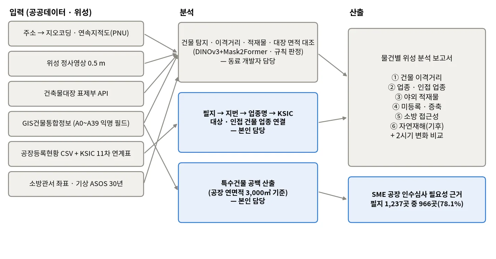
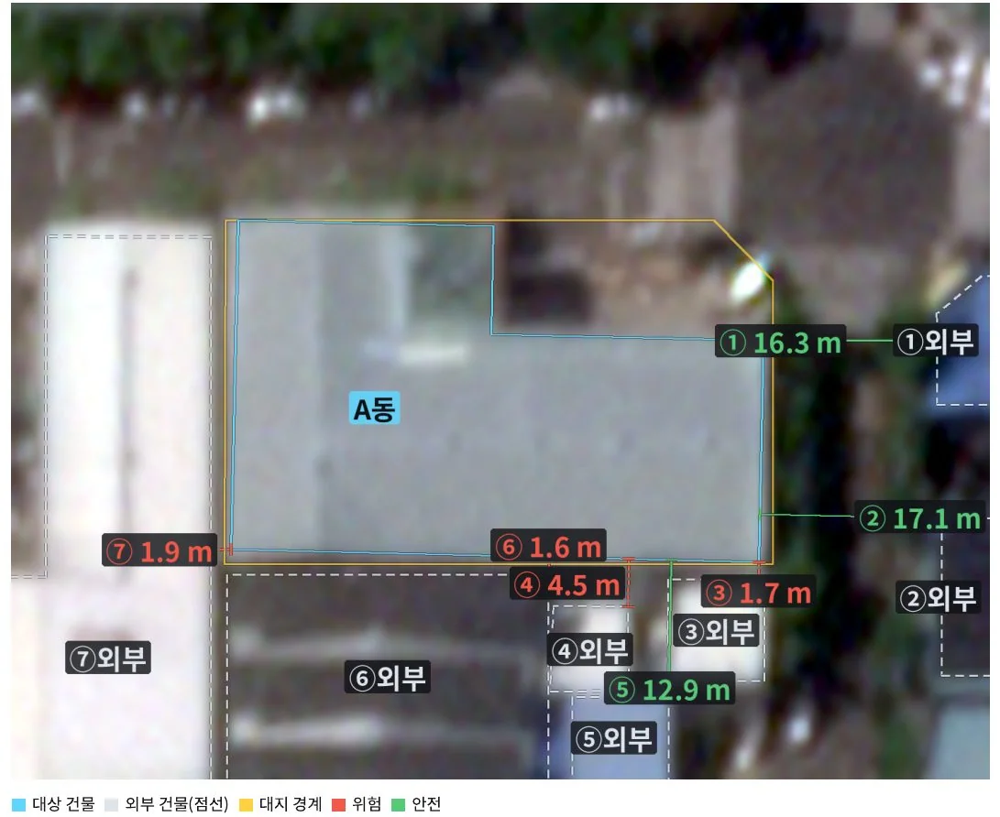
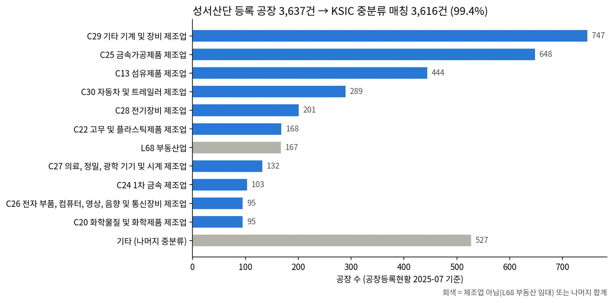
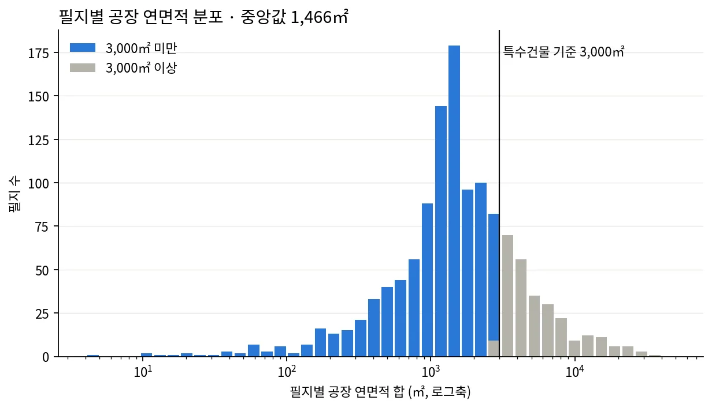
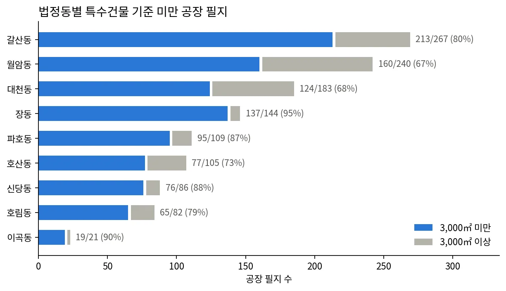
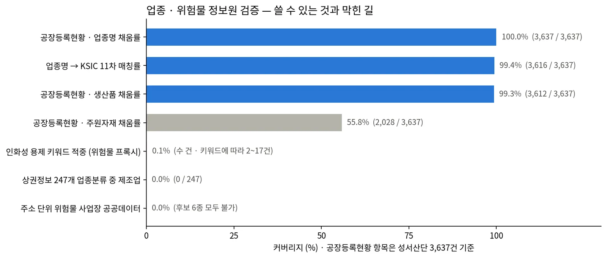
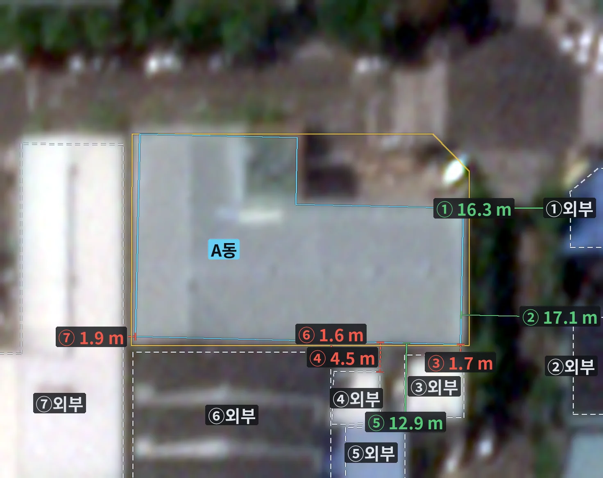
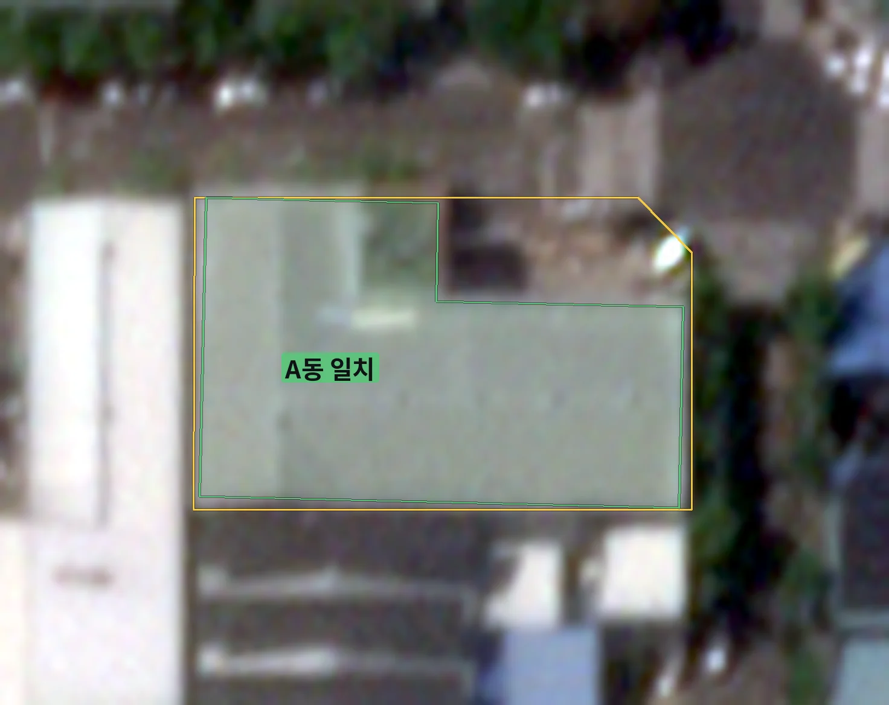
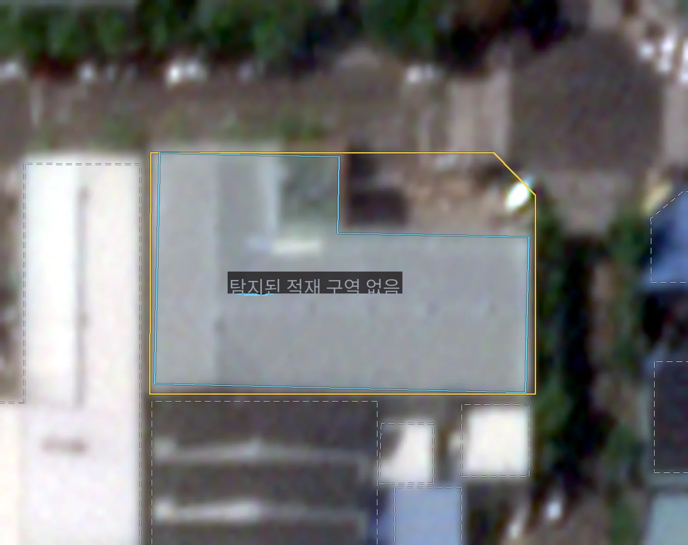

위성·공간정보 기반 중소 공장 인수심사 분석Satellite & Geospatial Underwriting Analysis for SME Factories
국내 대형 손해보험사와 진행한 PoC 에서 대구 성서산업단지 중소 공장 물건을 위성영상·공공 공간데이터로 판독하는 인수심사 참고자료 체계를 구축함. 0.5 m 영상에서 건물을 분할·검출하고 건축물대장·연속지적도와 대조해 이격거리·적재물·증축 여부를 물건별로 판정함. 공장 필지 1,237곳 중 966곳(78.1%)이 특수건물 기준(연면적 3,000㎡) 미만이라 안전점검 자료가 없다는 공백을 원자료에서 산출해 사업 근거로 삼음.Built an underwriting reference system for small and mid-sized factories in Daegu's Seongseo industrial complex, in a PoC with a major Korean P&C insurer. Buildings are segmented from 0.5 m imagery and matched against the building register and cadastral map to judge separation distance, stored materials and unpermitted extension per property. The business case rests on a gap computed from raw data: 966 of 1,237 factory parcels (78.1%) fall below the 3,000 m² special-building threshold and so carry no mandatory fire-safety inspection record.
배경 · 목표Background
- 화재보험법상 공장은 연면적 3,000㎡ 이상만 특수건물(특약부 화재보험 의무·안전점검 대상)이라 그 아래 SME 공장은 보험사가 참고할 점검 자료가 없음
- 직접 Risk Survey는 물건 수만큼 비용·시간이 들어 산단 전체 소형 물건에 적용하기 어려움
- 위성 0.5 m 영상 + 건축물대장·연속지적도·공장등록현황 등 공공데이터를 결합해 물건별 참고자료(이격거리·업종·적재물·증축·소방 접근성·기후)를 자동 산출하는 것이 PoC 목표
- Under Korean fire-insurance law only factories with ≥3,000 m² total floor area are 'special buildings' subject to mandatory coverage and safety inspections, so smaller SME factories leave insurers with no inspection record
- On-site risk surveys scale linearly with the number of properties and are impractical for every small factory in an industrial complex
- The PoC aimed to generate per-property reference reports (separation distance, industry, outdoor storage, unregistered extensions, fire-station access, climate) by combining 0.5 m satellite imagery with public building, cadastral and factory-registry data
방법Method
- 건물을 벡터 폴리곤으로 뽑는 2단 모델 — Stage1 인스턴스 분할(DINOv3 ViT-L/16 동결 + Mask2Former 200쿼리), Stage2 꼭짓점 헤드(ResNet-18 4헤드: mask·vertex·offset·edge)
- 검출 폴리곤을 연속지적도 필지(PNU)·건축물대장 등록 동과 대조해 미등록·무단증축·멸실 미반영으로 분류
- 물건별 판정 자동화 — 인접 건물까지 최근접 이격거리, 적재물은 비전-언어 모델 판독, 대장 건축면적과 위성 판독 면적 대조
- 공장등록현황(data.go.kr, 대구 11,744행) 프로파일링: 성서 3,637행, 단지 차수 표기는 '성서지방'·'성서5차' 2종뿐, 주원자재 44% 결측 확인
- GIS건물통합정보 shapefile의 익명 필드 A0~A39를 값 분포로 역판별하고 관계식(건폐율=A23/A22, 용적률=A24/A22, 주차면적=A36×11.5)으로 검증
- 주소→필지(PNU)→지번→공장등록현황 업종명→KSIC 11차 연계표 대·중분류로 대상·인접 건물 업종 연결; 지번 꼬리표('번지'·블록/로트)와 '외 N 종'·공백 차이를 정규화
- 주용도=공장(A29='17000') 건물을 PNU로 묶어 연면적 합을 3,000㎡ 기준과 비교(필지 폴리곤 겹침이 아니라 PNU로 선택 — 공단에서는 겹침 선택 시 면적이 3~8배 부풀었음)
- 업종·위험물 정보원 후보(소상공인 상권정보, 위험물 관련 공공데이터 6종, 공장등록현황 생산품·주원자재)를 전수 확인해 사용 가능 여부 판정
- Two-stage model that extracts buildings as vector polygons: instance segmentation with a frozen DINOv3 ViT-L/16 and a 200-query Mask2Former, then a ResNet-18 vertex head with mask, vertex, offset and edge branches
- Match the detected polygons against cadastral parcels (PNU) and registered buildings to separate unregistered, unpermitted and unrecorded-demolition cases
- Automate the per-property verdict: nearest separation distance to neighbours, stored materials read by a vision-language model, and registered footprint area against the satellite reading
- Profiled the Daegu factory registry (11,744 rows, data.go.kr): 3,637 rows in Seongseo, only two complex-name variants (no phase-level labels), 44% missing raw-material field
- Reverse-engineered the anonymised A0–A39 fields of the national building-GIS shapefile from value distributions and validated them with identities (coverage = A23/A22, FAR = A24/A22, parking area = A36 × 11.5)
- Linked address → parcel (PNU) → lot number → registered industry name → KSIC rev.11 section/division for the target and neighbouring buildings, normalising lot suffixes, multi-industry '+N more' tags and whitespace differences
- Grouped factory buildings (main use code 17000) by PNU and compared summed floor area with the 3,000 m² threshold, selecting by PNU rather than polygon overlap (overlap selection inflated areas 3–8× in the dense complex)
- Exhaustively checked candidate industry and hazardous-material sources (small-business commercial district data, six hazmat-related public datasets, product/raw-material fields) for usability
결과Results
- 특수건물 공백: 성서산단 9개 법정동 공장 필지 1,237곳 중 966곳(78.1%)이 연면적 3,000㎡ 미만, 건물 동 기준 2,128동 중 1,884동(88.5%); 필지별 연면적 중앙값 1,466㎡ — 원자료 재계산으로 일치 확인
- 업종 연결: 성서 등록 공장 3,637건 중 3,616건(99.4%)이 KSIC 중분류에 매칭; 상위 C29 기계·장비 747, C25 금속가공 648, C13 섬유 444, C30 자동차 289
- 표본 물건 보고서: 대장 1,313㎡ vs 위성 판독 1,275㎡(−3%, 일치), 최근접 이격 1.6 m 등 위험 4건, 10일 간격 2시기 차이 −0.6~+0.8 m로 변화 없음 판정
- 건물 판독 정확도 94.7%; 판정대상 140필지(대장 286동)에서 모델 검출 658동 — 미등록 의심 3동, 무단증축 의심 1동, 멸실 미반영 26동
- 꼭짓점 헤드 도입 효과(검증 778 instances): 코너 F1@2px 26.5% → 42.1%, 평균 IoU 0.807 → 0.825, C-IoU 0.743 → 0.780, PoLiS 3.09 → 2.75, 평균 정점수 5.11 → 4.87(GT 4.83). 학습자료 6,425동·31,097꼭짓점
- Special-building gap: 966 of 1,237 factory parcels (78.1%) in the nine Seongseo districts are below 3,000 m²; 1,884 of 2,128 buildings (88.5%); median parcel floor area 1,466 m² — re-computed from the raw shapefile and matched
- Industry linkage: 3,616 of 3,637 registered Seongseo factories (99.4%) matched to a KSIC division; top divisions C29 machinery 747, C25 fabricated metal 648, C13 textiles 444, C30 motor vehicles 289
- Sample property report: register 1,313 m² vs satellite 1,275 m² (−3%, consistent); four separation-distance flags with nearest 1.6 m; two acquisitions 10 days apart differed by −0.6 to +0.8 m, below the 1.3 m change threshold
- 94.7% building-detection accuracy; across 140 assessed parcels (286 registered buildings) the model found 658, flagging 3 unregistered, 1 unpermitted extension and 26 demolitions not yet reflected in the register
- Adding the vertex head (778 validation instances): corner F1@2px 26.5 to 42.1%, mean IoU 0.807 to 0.825, C-IoU 0.743 to 0.780, PoLiS 3.09 to 2.75, mean vertex count 5.11 to 4.87 against a ground truth of 4.83; trained on 6,425 buildings, 31,097 vertices










배운 점 · 한계What I learned · Limitations
- 소상공인 상권정보는 247개 업종분류에 제조업(C)이 아예 없어 산단 업종 커버리지 0% — 공장등록현황이 유일한 업종 소스였음
- 주소 단위 위험물 취급 사업장 공공데이터는 후보 6종 모두 사전·집계·필드 누락으로 사용 불가; 생산품·주원자재 텍스트 프록시도 주원자재 44% 결측, 인화성 용제 키워드 적중은 키워드 정의에 따라 2~17건(0.05~0.5%)뿐 — 원래 메모의 '4건'은 키워드 목록이 남지 않아 정확 재현 실패
- 한국어 부분문자열 매칭은 오탐이 심함('동'→'자동차', '면'→'표면') — 키워드 규칙에는 단어경계 처리가 필요
- 공장등록현황 지번은 '702-5번지 (3차단지79B 7-1L)' 꼴이라 정확일치 0건; 본번-부번 정규화가 핵심. 미매칭 21건은 구 분류 표기
- 특건 공백은 '공장 연면적 합계'를 필지 단위 합으로 근사한 값 — 다필지 사업장·다사업장 필지는 오차 요인으로 남음
- 파라메트릭 상품 3안(전조 지수·절대 침하량·부등침하)은 현재 데이터로 불가(미탐 45%·오탐 36%, 침하 큰 곳≠사고 나는 곳, 관측점 간격 31~33 m)로 결론 — 발표에서 제외
- '현장조사비 30% 절감' 같은 해외 사례 축소 목표치는 근거 부족 지적을 받고 삭제, 자체 검증 수치로 대체; 위성 판독은 Risk Survey의 1:1 대체가 아니라 자료 공백을 메우는 보완으로 표현
- The national small-business commercial-district dataset has no manufacturing section among its 247 codes, giving 0% coverage in an industrial complex — the factory registry was the only industry source
- No public dataset gives hazardous-material handlers at address level: all six candidates were dictionaries, aggregates or lacked the fields; the product/raw-material text proxy had 44% missing raw materials and only 2–17 solvent keyword hits (0.05–0.5%) depending on the keyword list — the earlier '4 hits' figure could not be reproduced exactly because the keyword list was not kept
- Korean substring matching produces heavy false positives (e.g. a one-syllable metal keyword matching inside 'automobile'), so keyword rules need word-boundary handling
- Registry lot numbers carry suffixes such as complex/block/lot tags, so exact matching returned zero hits; normalising to main-sub lot numbers was the key step. The 21 unmatched rows used legacy industry names
- The special-building gap approximates 'total factory floor area' by per-parcel sums; multi-parcel sites and multi-tenant parcels remain error sources
- All three parametric-product designs (precursor index, absolute subsidence, differential settlement) were judged infeasible with current data (45% misses / 36% false alarms, high-subsidence areas ≠ accident areas, 31–33 m point spacing) and dropped from the final deck
- Overseas-benchmark targets such as '30% lower survey cost' were removed after the client questioned their basis and replaced with our own verified numbers; satellite screening is framed as filling a data gap, not as a 1:1 replacement for risk surveys
관련 코드Code
저장소는 센서 → 위성 → 기법 순으로 정리돼 있고, 각 폴더에 입력·출력 표가 있음.The repository is organised by sensor, satellite and technique; each folder documents its inputs and outputs.
산출물Deliverables
- 건물 의미분할 모델과 추론 코드, 검출 폴리곤
- 물건별 보고서 생성기 — 이격거리·적재물·증축·업종 항목 자동 작성
- 특수건물 공백 산출 스크립트와 지도·분포 그림
- 주소→업종→KSIC 연결 스크립트와 재현 절차
- 공장등록현황·GIS건물통합정보 프로파일링·필드 매핑 검증 스크립트
- 물건별 위성 분석 보고서의 업종·인접 업종 항목
- 최종 발표자료 정리(고객 내부 자료, 비공개)
- Building segmentation model, inference code and the detected footprints
- Per-property report generator covering separation, stored materials, extension and industry
- Special-building gap script with map and distribution figures
- Address → industry → KSIC linkage script and reproduction guide
- Profiling and field-mapping validation scripts for the factory registry and building GIS
- Industry and neighbouring-industry section of the per-property satellite report
- Final presentation deck (client-internal, not public)
원본 보고서와 발표자료는 사내 자료로 공개하지 않음. 분석 코드는 GitHub에 정리되어 있음.Source reports and decks are internal and not published here. Analysis code is organised on GitHub.